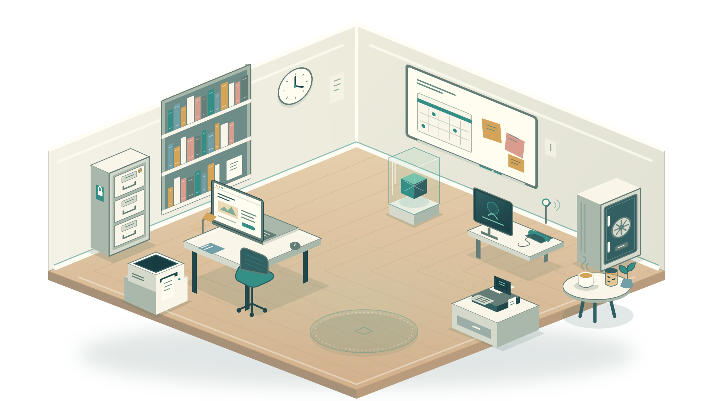
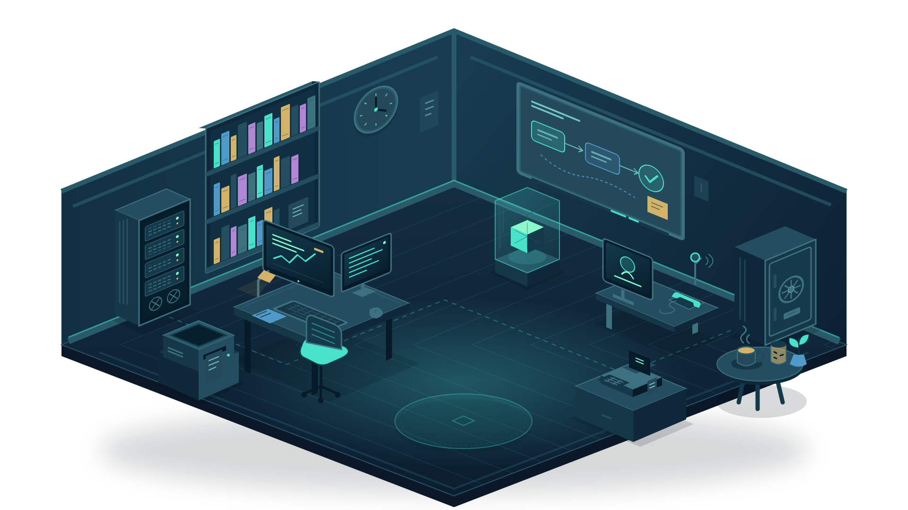

CYBERSERCH / TU OFICINA, CON MENOS VUELTAS
Tu trabajo tiene muchas piezas. Empecemos por una.
Entra, toca un objeto y encuentra una forma más sencilla de trabajar. Sin tener que aprender palabras técnicas.
Toca un objeto o elige una estación. Axiom te acompaña.
LA OFICINA12 estaciones · un solo espacio



Cada objeto tiene algo para ti.
TAMBIÉN PUEDES IR DIRECTO
Elige por dónde empezar.
La misma habitación, en una lista fácil de recorrer.
DE LA IDEA AL SIGUIENTE PASO
Primero lo entiendes. Después decides.
Prueba una herramienta gratis, mira ejemplos o prepara una estimación. Tú eliges el ritmo.